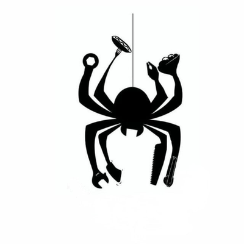
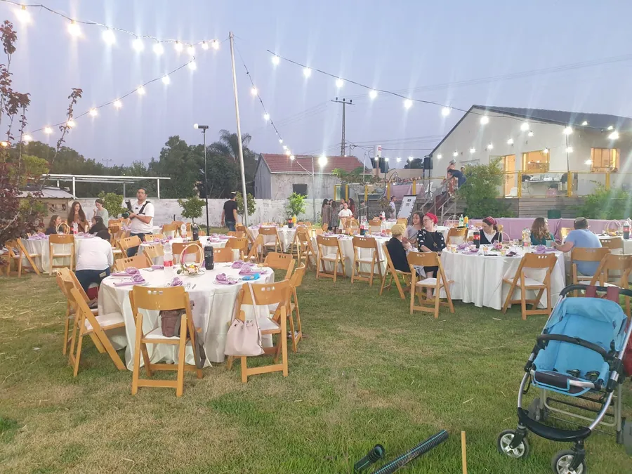
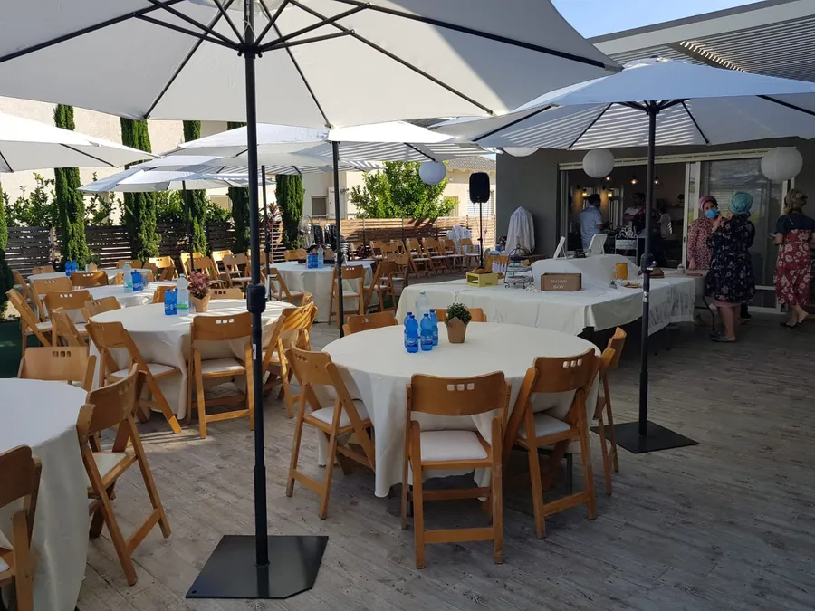
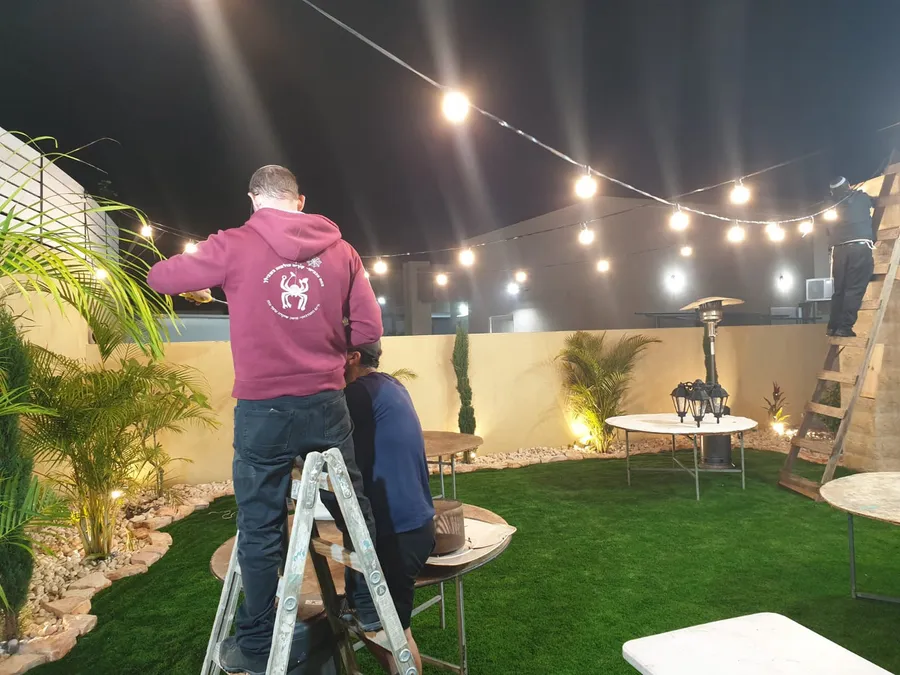
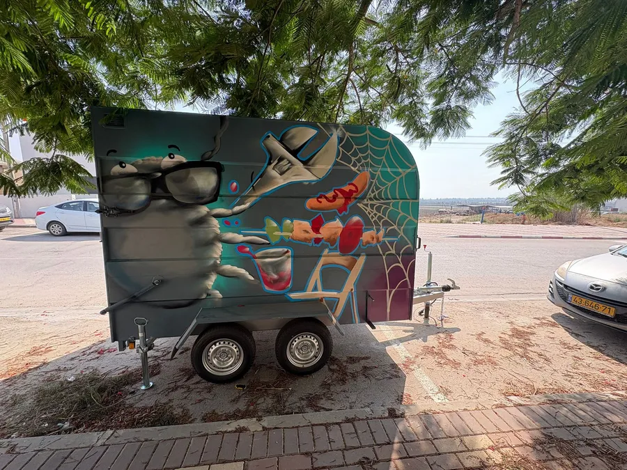
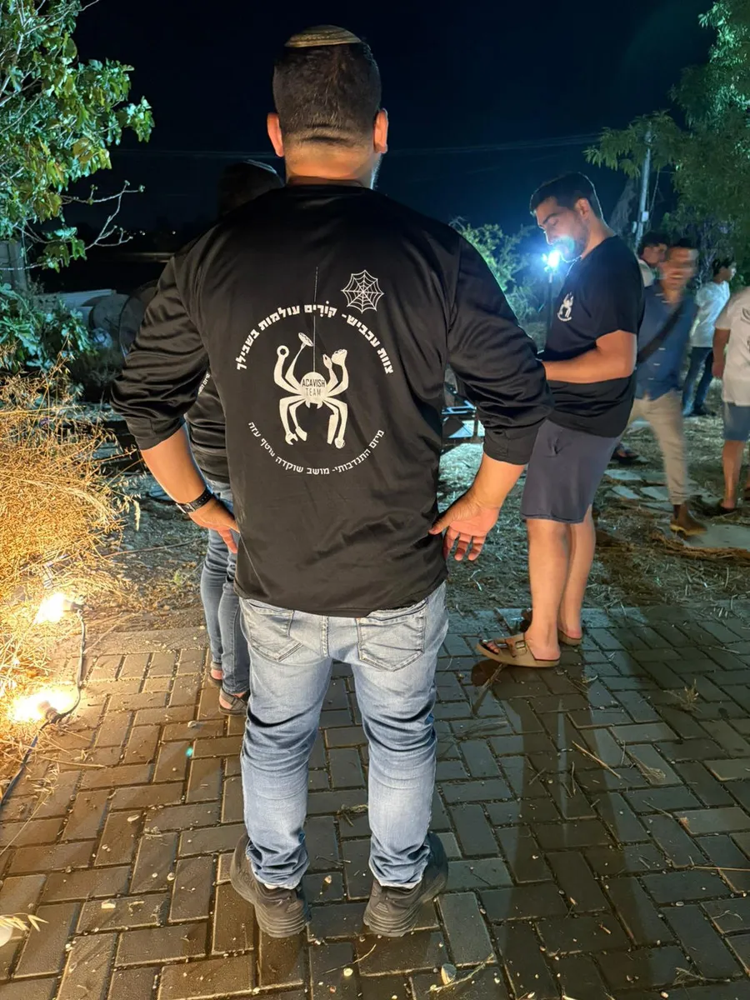
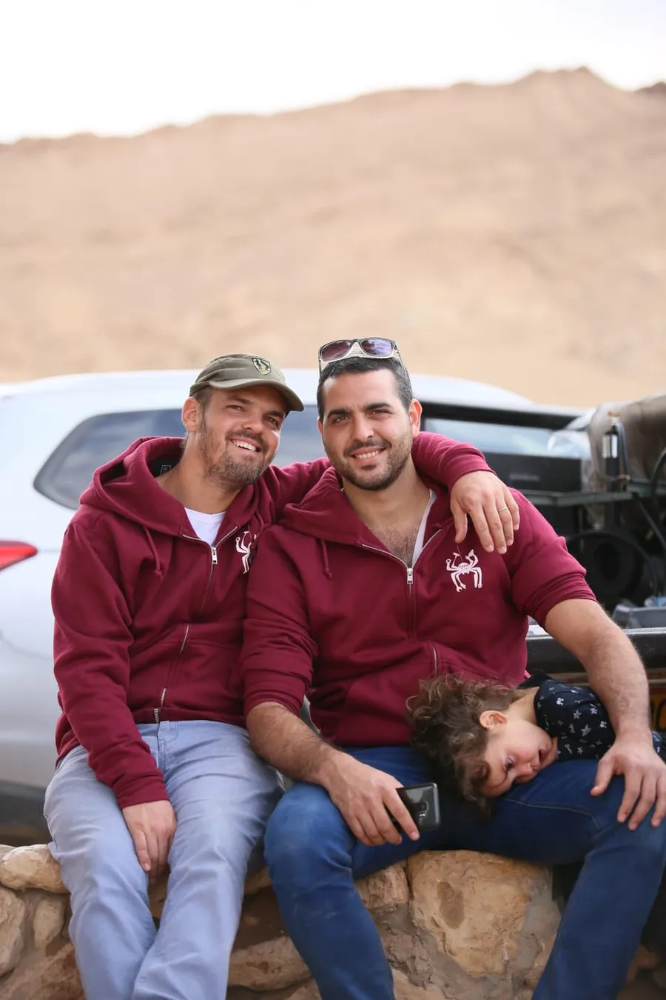

מיזם קהילתיצוות עכביש
צוות לוגיסטי שקם מתוך הקהילה עצמה, ומסייע בהקמת אירועי שמחה ופרויקטים מיוחדים מתוך ערבות הדדית.
→ חזרה לדף הבית"מיזם עכביש ייצור קהילה גדולה שתקדם את ערכי ההתנדבות והערבות ההדדית, ותעודד שיתופי פעולה בנגב המערבי."
מהו מיזם עכביש
צוות של חברי הקהילה שמסייע בהקמה ובפירוק של אירועים, ובציוד אירועים כמו שולחנות, כיסאות ותאורה. צוותי עכביש כבר פועלים במושב שוקדה, ביישוב שובה ובניר גלים, ואנחנו רוצים לעזור להקים צוותים נוספים.






מה מיוחד בצוות לוגיסטי?
מעבר לעזרה הממשית בהקמת בת מצווה או אירוע אחר בחצר או ברחוב, יש פה תחושה של חוסן קהילתי וערבות הדדית. רואים אותי, אני חלק ממשהו גדול. אני שייך.
איך זה התחיל
ממש לפני הקורונה הבנו שכדאי שיהיה לנו ציוד, ושתקום קבוצת מתנדבים שתסייע אחד לשני באירועי השמחה. לא האמנו כמה מיזם לוגיסטי ופשוט יחזק את הקשר הקהילתי, את החוסן, ואת הידיעה שהשמחה של החברים שלך היא השמחה שלך.
המטרות
- להטמיע את מודל צוות עכביש ביישובים נוספים בנגב המערבי
- להרחיב את הפעילות כך שתחבר בין יישובים
- להנחיל ולטפח ערכי התנדבות, עזרה ובניית קהילה
רוצים להקים צוות ביישוב שלכם?
הכי חשוב זו חבורת מתנדבים שמבינים את הערך של המיזם. ציוד כמו נגרר, שולחנות ותאורה משדרג את הצוות, אבל גם בלי ציוד, הלב והסיוע ההדדי הם מעל הכול. אשמח לשתף ברקע ובכללי הפורמט.